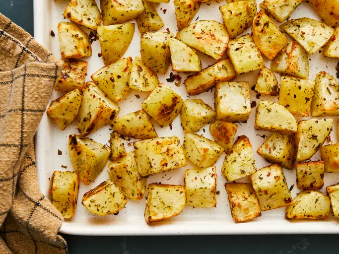
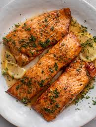

Odin Recipes

Oven Roasted Potatoes
Perfectly crisp buttery potatoes ready in seconds
Ingredients
- 4 potatoes
- 1 tbsp olive oil
- 3 tbsp italian seasoning
Steps
- Chop potatoes
- Coat potatoes in olive oil
- Add Italian seasoning
- Bake at 400 for 15-20 minutes
- Remove from oven and add salt
oven-roasted-potatoes
Pan Seared Salmon
Season your salmon, throw it in a pan and dinner is done in 15 minutes

Ingredients
- Salmon
- OLIVE OIL
- seasoning
Steps
- Season Salmon
- Add salmon to pan and cook for 3-5 minutes per side
pan-seared-salmon